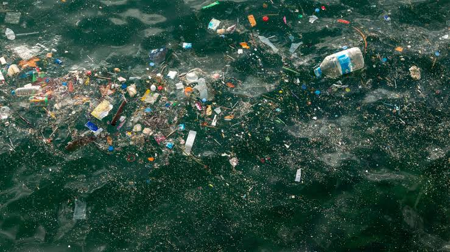
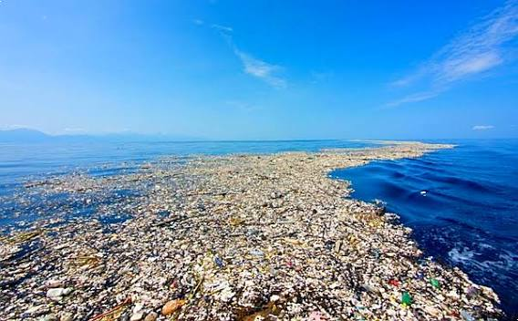

Every year, millions of tons of waste enter our oceans, impacting marine animals, destroying natural coral habitats, and causing microplastic contamination throughout the global food chain.
Around 8 to 11 million metric tons of plastic enter the ocean every single year. That’s roughly equivalent to dumping a full garbage truck of plastic into the ocean every minute.
Click below to inspect how long common everyday trash items take to decompose in the ocean environment.

Click a button below to check an item's breakdown time!
Plastics don’t truly biodegrade—instead, they photo-degrade and fragment into tiny particles called microplastics. Scientists have detected microplastics in every corner of the globe, from Arctic sea ice down to crustaceans living in the deepest parts of the Mariana Trench.
Ocean currents gather floating waste into five massive swirling gyres. The largest, the Great Pacific Garbage Patch, is located between Hawaii and California. It covers an estimated surface area of 1.6 million square kilometers—an area twice the size of Texas or three times the size of France!

Over 1 million seabirds and 100,000 marine mammals and sea turtles die each year from plastic entanglement or ingestion.
Did You Know?
If current plastic production and waste management trends continue, scientists estimate that by 2050, the total weight of plastic in the oceans could outweigh all the fish in the sea.